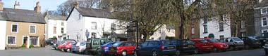
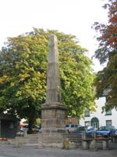
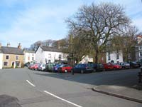
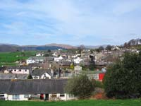
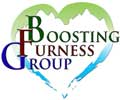

Broughton in Furness Tourist Information
 |
|
Introduced to the traveller by a roadside sign as a “historic market town”, the visitor to Broughton in Furness will not be disappointed where indications of its history and heritage are clearly seen in the mosaic of the cobbled market square. Broughton in Furness has long been a favoured destination for enthusiasts who arrive to explore the wild life of the nearby Duddon Estuary and walk the paths and trails of wooded valleys and open spaces of the Furness fells. Visit our Duddon Valley page. Broughton and surrounding town, village and countryside communities offer many choices of visitor friendly facilities and amenities provided by a mixed and wide range of holiday accommodations. (See our accommodation page) For more about Broughton in Furness please see below for a list of attractions, places to eat and transportation. Tourist Information Centre - The Square, Broughton in Furness. Phone 01229 716115. www.broughtontic@btconnect.com Nearby towns and villages - Grizebeck, Foxfield, Broughton Mills, Seathwaite, Askham in Furness, Ulpha. How to get there: By rail: Nearest station is Foxfield. From the south, change at Preston or Lancaster for Foxfield on the train to Barrow in Furness. By Bus: Services departing from the Market Square to Ulverston calling at Broughton Beck, Gawthwaite, Grizebeck and Foxfield. A Thursday only service to Askham, Kirkby in Furness, Grizebeck and Gawthwaite. By road: Reach Broughton in Furness from the North by the A595; the Central Lakes by the A592 and A5092 and from J36 of the M6 by the A590/ A5092.
|
  
|
{kind=link}
{kind=link}
 |
Attractions in Broughton in Furness |
Market Square Obelisk
Erected in 1810 to commemorate the 50th year of the reign of King George 3rd. On 1st of August each year a proclamation is read out from the steps of the obelisk to celebrate the Village Fair Charter of Elizabethan times.
Market Square Stocks
Stand at the foot of the obelisk. A 1405 law, which has never been repealed, required every village to install and maintain stocks for the punishment of minor offences.
Market Square Fish Slabs
For the display the catch of the day. Any merchant found to be overcharging or misleading customers was likely to be sentenced to a period in the nearby stocks.
St. Mary Magdalene Church
A Saxon church thought to be the oldest building in Broughton in Furness. It contains one of the original 15th C church bells, a church chest carved from a solid trunk of oak, a 1595 Bishops bible and a 15th C font. The church grounds are well known for the beautiful display of Springtime daffodils.
Duddon Iron Furnace
From the Middle Ages onwards, iron was was produced in the region and in 1736 the furnace was constructed and remained in operation until 1866. It is one of the most impressive charcoal fired blast furnaces in Britain. Located on the Corney Fell road turn off from the A 595 close to Duddon Bridge.
Swinside Stone Circle
Three miles from Broughton a mile or so along the Corney fell Road. Sometimes referred to as “Sunkenkirk”. Legend has it that a church is buried beneath the 55 stones of the circle. Although the site is on private land the stones are easily viewed with especially good views from nearby Raven Crag.
Dalton Castle
A 14th C Pele Tower 10 miles from Broughton in Furness in the old town of Dalton in Furness. It was built in the 1300's as a refuge for the monks of Furness Abbey against Scottish raiding parties. Open to the public on Saturdays between 2pm and 5pm.
South Lakes Wild Animal Park
Broughton Road, Dalton in Furness. Described as probably the U.K.'s best wildlife conservation zoo with animals from all over the world. Open daily from 10am. - 4.30pm. www.wildanimalpark.co.uk
The Duddon Mosses
A site designated as one of “Special Scientific Interest”. This is a large area of raised wetlands at the head of the Duddon Estuary supporting a large number of species of birds and plants. Please note that it is dangerous to walk other than on the paths and boardwalks in this fragile habitat. Further information from the Tourist Information Office.
Walks
River Duddon. Idyllic walks alongside and close to its banks through the woodlands of the Duddon Valley. The display of daffodils and bluebells in the Spring should not be missed. See Wordsworth's “Sonnets of the River Duddon” and Millom poet Norman Nicholson's poem “On Duddon Marsh”.
Ulpha Fell and Devoke Water.
Ulpha and River Duddon. (low level paths)
Dunnerdale Fells.
The Seathwaite Round.
Railway Walk. An easy level walk along a disused railway track to the Valley of Woodland.
Stickle Pike. Although only 375 metres the summit can be seen from the Broughton and High Furness areas. Follow Wainwrights ascent from Broughton mills along tarn Hill Ridge and return down the Dunnerdale.
Seathwaite Tarn. The third largest tarn in the Lake District overlooks the Duddon valley near the village of Seathwaite.
Broughton stands on the Cumbria Coastal way.
Broughtons Tourist Information Centre has details of more and for all abilities.
Fishing
River Duddon. 366 yards of North Bank below Duddon Bridge on the A595. Salmon and sea trout when conditions permit.
River Duddon. Hall Dunnerdale, Ulpha. Salmon, sea trout and occasional brown trout.
River Lickle, near Duddon Bridge. Salmon and sea trout. For more details, contact the Millom & District Angling Association at www.millomlocal.co.uk Day and weekly permits available from the Tourist Information Centre.
Hang Gliding/Soaring
Western face of Corney Fell. Grid reference SD138920. Full information from www.cumbriasoaringclub.co.uk
Canoeing/Kayaking
The Duddon is grade 3 with some 4 or 5. Details from www.duddoncanoeclub.org.uk
Golf
Millom/Silecroft Golf Club - Eight miles from Broughton in Furness near the junction of the A595 and A5093. Seaside links course of 9 holes over 5877 yards. Visitors welcome though generally not in the evenings, weekends, Bank Holidays and competition days.
Phone: 01229 774250.
The River Duddon
The Wordsworth sonnet number 32 described it thus: "Majestic Duddon over smooth flat sands, gliding in silence with unfettered sweep".
The Duddon Estuary
An important area of wild life supporting a wide species of birds and a large percentage of the Natterjack Toad population. It includes the fragile habitat of the Duddon Mosses to which there is only a limited access for the public.
The Railway Walk
A particularly pleasant and scenic walk from the town alongside a disused railway track. A good way to unwind.
St Mary Magdalene Church
The church dates from Norman times and contains many fine stained glass windows. It is well known locally for the magnificent display of daffodils in the springtime.
Dalton Castle (Peel Tower)
The castle dates back to the 14th C and was built as a defence against the threat of a Scottish invasion.
Food and Drink in Broughton in Furness |
Old Kings Head Hotel
Our restaurant serves a variety of home cooked foods, freshly prepared by our Head Chef.
The bar provides a range of cask-conditioned ales as well as a fine selection of wines & spirits.
Opening hours: Bar. Midday to midnight Tuesdays to Sundays. Mondays 5pm till midnight.
Bar Meals. Midday till 2pm except Mondays.
Restaurant. 5 pm till 8pm all week.
Sunday Roast. Midday till 8pm.
You can find us on Church St.,
Broughton-in-Furness,
Cumbria. CA 20 6HA
Phone: +44 (0)1229 716293
Web: www.oldkingshead.net
Email: enquiries@oldkingshead.net
The Square Café
Traditional home cooking at its best.
The Cafe is a comfortable and friendly place to be : whether you want a late breakfast, a bowl of warming home-made soup or a more substantial lunch, a snack, or coffee with a generous slice of organic cake you will be given a warm welcome.
Opening hours: 10.30 a.m. to 5.00 p.m. every day.
www.thesquarecafe.biz
The Blacksmiths Arms- Broughton Mills.
Michael and Sophie Lane welcome you to the oak beams and stone flagged floors of their Award Winning cosy traditional Lakeland Pub & Restaurant. This is food and mood at its best in an establishment recommended in Egon Ronays Pub Guide; AA. Best of Pub Food, and the Good Pubs Guide. Here you will find a fare ranging from a light meal to a full blown feast of local produce freshly prepared to order.
www.blacksmithsarms.co.uk or telephone 01229 716824.
High Cross Inn - Local, seasonal and fresh homemade food can be taken in the traditional stonewalled restaurant, the conservatory restaurant or the cosy bar. Sandwiches, afternoon teas, high teas and evening meals. Food served all day Monday –Saturday from 11am to 8.45pm. Sunday from noon until 8pm. Beautiful views of the Duddon Valle, fells and estuary. www.highcrossinn.co.uk
Newfield inn - A 16th C pub serving prepared and cooked to order food either in the bar, dining room or large garden with views of the South Lakeland fells. A good selection of wines available, fine ales, tea and coffee. Noon until 9pm every day. www.newfieldinn.co.uk
Prince of Wales, Foxfield - An award winning pub and a handy venue opposite the railway station where a selection of tasty snacks are available at certain times of the day. Telephone 01229-716238.
Black Cock Inn, Broughton in Furness - Lunch time and evening meals prepared from local produce. Wide selection of wines and ales, tea and coffee.
www.blackcockinncumbria.co.uk
Phone: 01229 716529 or email:lesley@lesley20.wanadoo.co.uk
Manor Arms. Broughton in Furness - Conveniently situated in the town square and offering a choice of freshly prepared snacks throughout the day. Fine ales, a selection of wines and spirits and tea or coffee.
Melville Tyson
High class butcher and grocery store. Local lamb, beef, pork and fresh fish. Choice of fresh vegetables, beer, wine and spirits. www.melvilletyson.co.uk
Broughton Village Bakery
Bakery and cafe open Tuesday to Sunday 9am – 5.30pm and Saturday & Sunday 9am – 5pm. www.broughtonvillagebakery.co.uk
Beswicks Restaurant - The Square, Broughton in Furness. www.beswicks.co.uk
Transportation in Broughton in Furness |
35 Taxi - Local and National bookings. Tourist sightseeing hire. U.K airport service. Phone: 01229 358294.
Mountain Bike Hire - The Mountain Centre, Market Street, Broughton in Furness. www.mountaincentre.co.uk